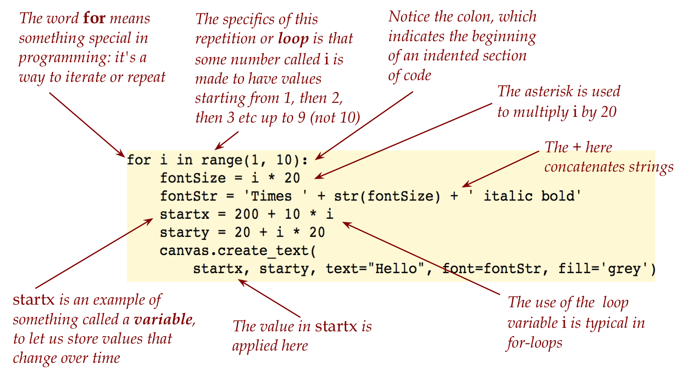
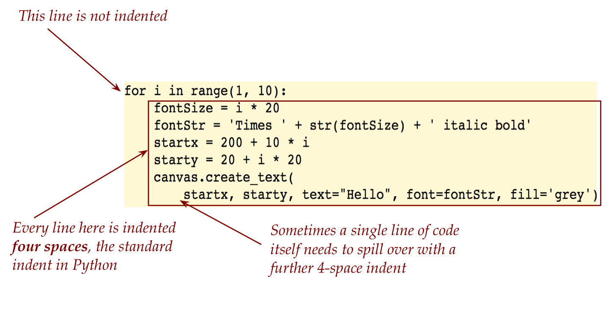

Module 1: A few more getting-started examples
Objectives
By the end of this module you will be able to:
- Learn what a comment is, and how to write them.
- Write programs with multiple prints
- Escape sequences
- Identify new syntactic elements.
- Understand case-sensitivity.
- Write a function and examine proper indentation.
- Find and fix errors
1.1 Whitespace
Consider the following program:
print ( 'Hello World!' ) Notice the spaces inserted in various places.
Consider this variation
print('Hello World!')(Two spaces before print).
Finally, look at:
print('Hello World!') (Extra spaces between Hello and World.)
Let’s point out a few things:
- Some kinds of whitespace, even if ill-advised, is permitted.
- When starting a line of code, proper indentation is expected, which is why we got an error when we indented the line starting with
print - The extra spaces between Hello and World are perfectly acceptable if the goal is to print them. Printing accepts whatever spaces you want printed.
1.2 Strings
A string in Python is a sequence of letters, digits, or symbols (like $ or *) surrounded by either
- A pair of double quotes, as in:
"Hello World!" - A pair of single quotes as in:
'Hello World!'
- Whichever quote you use to start a string must be used to end the string.
- The ending quote must be on the same line as the starting quote.
- There are special techniques to handle long strings that need to spill over multiple lines (which we’ll see below).
- This raises some questions:
- Is it possible to print a single line but with multiple print statements?
- How does one print a quote?
First, note that we can use single or double quotes for different strings in the same program:
print('Hello')
print("World!") A print statement prints the string within parenthesis and then goes to the next line of output, which is why we see World! on the next line.
To keep printing on the same line:
print('Hello', end=' ')
print('World!')We’ve reverted to using single-quotes for all strings, which will be our preference.
We’ll now go the other way and have a single string itself contain a directive to spill over to the next line.
print('Hello\nWorld!') Notice the backslash \ followed by n inside the string: 'Hello\nWorld!'
Strings can embed special so-called escape sequences that begin with backslash.
This will give us one way to print a quote:
print('My friend\'s friend\'s dog\'s friend')Another way is to use one set of quotes to delimit the string that are different from the ones used within:
print('My friend\'s friend\'s dog\'s friend')
print("bit my friend's dog's ankle")
print('who yelped "owww"')How does one print a backslash itself? By using a double backslash:
print('The backslash character, \\, is less intimidating now')1.10 Video
Another use of backslash: to make long strings
- Sometimes we need to type in a really long string.
- The following does NOT work:
print('An Ogden Nash poem:')
print('The camel has a single hump;
The dromedary, two;
Or else the other way around.
I’m never sure. Are you?')To spread a single string over multiple lines, one uses a triple quote as in:
print('An Ogden Nash poem:')
print('''The camel has a single hump;
The dromedary, two;
Or else the other way around.
I’m never sure. Are you?''')Empty strings: - It is possible to not have anything in a string, as in:
print('')There are no letters, digits or anything between the two single quotes above.
- Such a string is called an empty string.
- Odd as it may seem, empty strings are useful (we’ll see later) when you want to add strings to make a longer string.
1.3 Case sensitivity
What if we had used uppercase P instead of lowercase p in print?
print('Hello World!')What if we changed the case inside a string?
print('helLo WoRLd!')Python is case sensitive but strings are like data inside programs, which means they can be whatever we like.
- The two strings
'Hello World!'and'helLo WoRLd!'are fine as two different strings, if that’s we want. - However, Python has only one
printand so it won’t recognizePrint(with capital P).
1.4 A peek at the future
We will occasionally jump ahead and present an example of a program that does something advanced, just so you get a feel for what’s coming.
With these examples, we’ll only ask you to type up the program and run the program.
And then we’ll point out a few features, just so that you get acquainted with features that you’ll eventually encounter.
import tkinter as tk
window = tk.Tk()
canvas = tk.Canvas(master=window, width=500, height=400)
canvas.pack()
for i in range(1, 10):
fontSize = i * 20
fontStr = 'Times ' + str(fontSize) + ' italic bold'
startx = 200 + 10 * i
starty = 20 + i * 20
canvas.create_text(
startx, starty, text="Hello", font=fontStr, fill='grey')
window.mainloop()Now let’s point out a few features of the program, and we’ll focus on the middle section: 
Our belief is that by showing you bits and pieces of advanced code, you’ll be primed to absorb these concepts when we work through them.
One of the most important things to observe about is that some code is indented: 
1.5 A reminder about computerese
As you complete Module 1 and ready that for submission you might want to review:
- Did you make your
module1folder? Did you ensure that theminmodule1is lowercase and that there’s no spacemoduleand1? - Are your Python programs from this module in that folder?
- Do you recall how to make a zip?
If it’s a bit hazy, please make sure to review from the material on computerese from Module 0.
1.0 comments
A comment is like a note-to-self that you include directly in a program as a way to explain something to yourself for later, or to someone else who reads your program.
Let’s explain:
#and ends at the end of the line.Under your
unit0, create amodule1folder (if you haven’t already), and then write up the above inmy_comments.py. Fix the second comment to start at the beginning of the line, and add an entirely new comment line of your own.Sometimes one needs a comment to spill over multiple lines, as in
Notice the missing # in the second line of the comment.
Write up the above in
comment_error.py. Remember to save the file (and do this for every exercise in the future that involves a program).